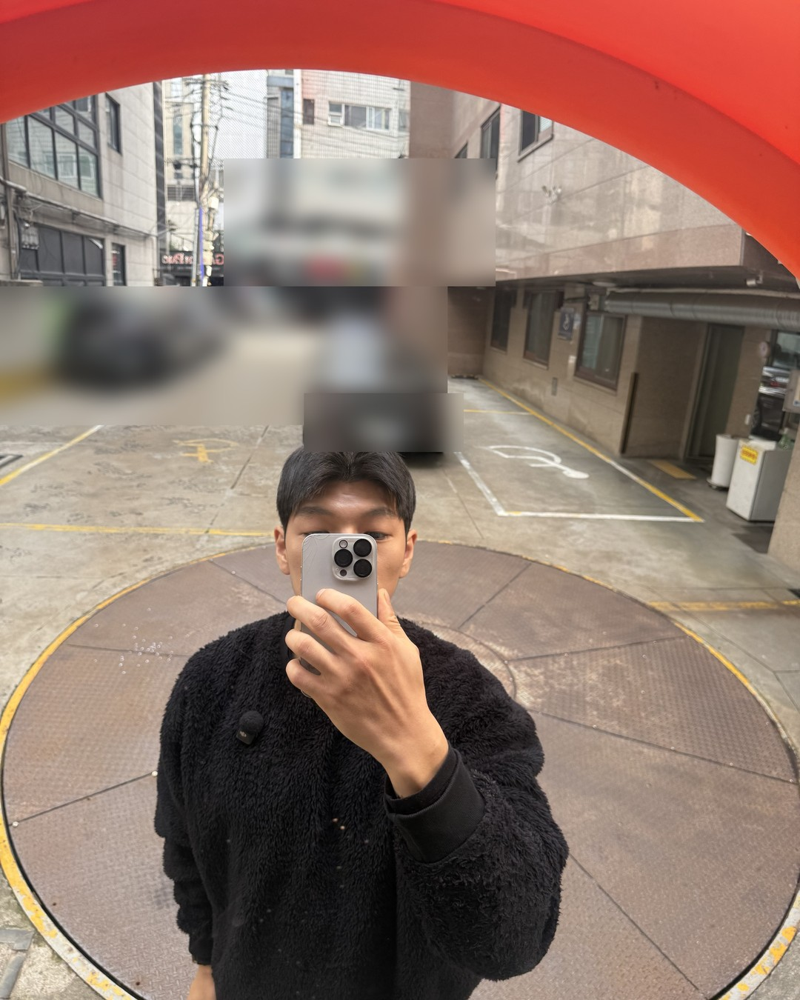
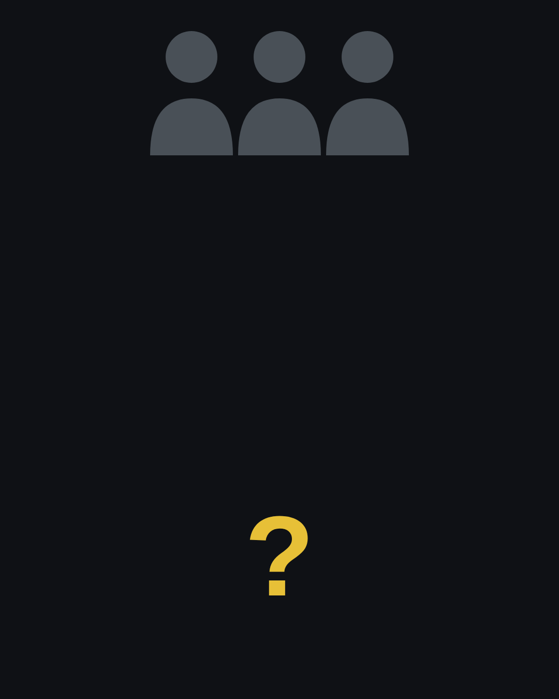
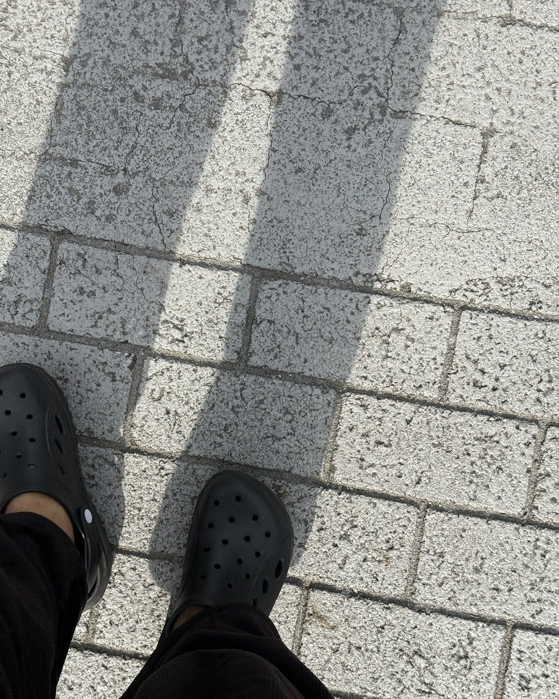
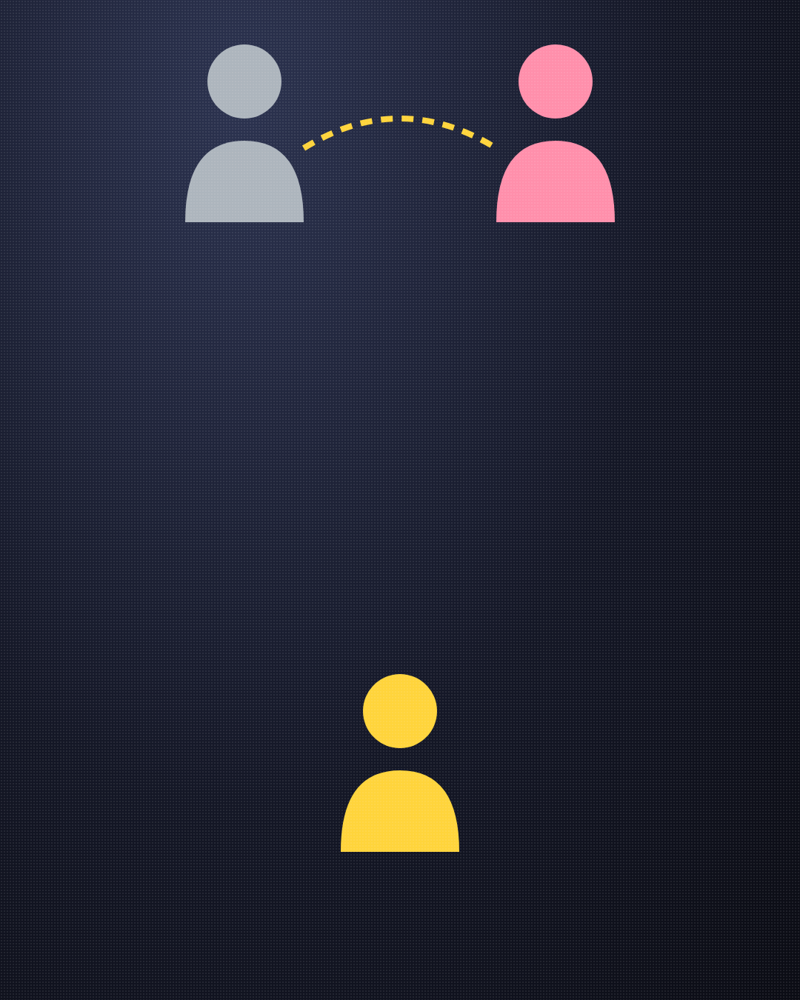
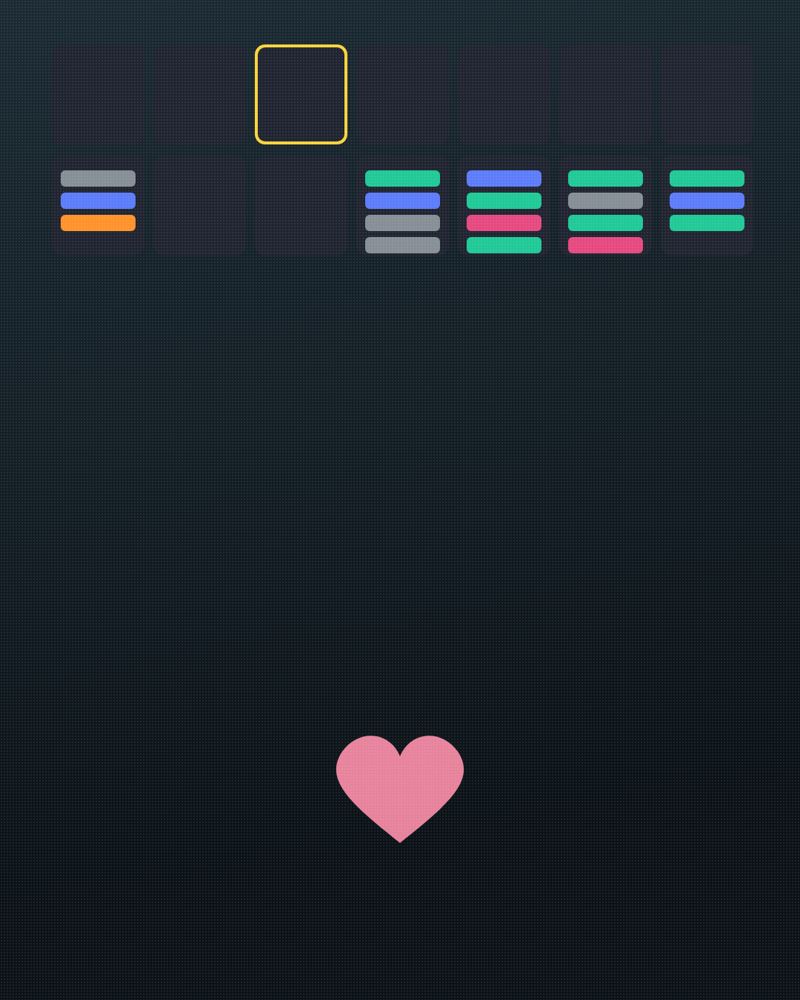
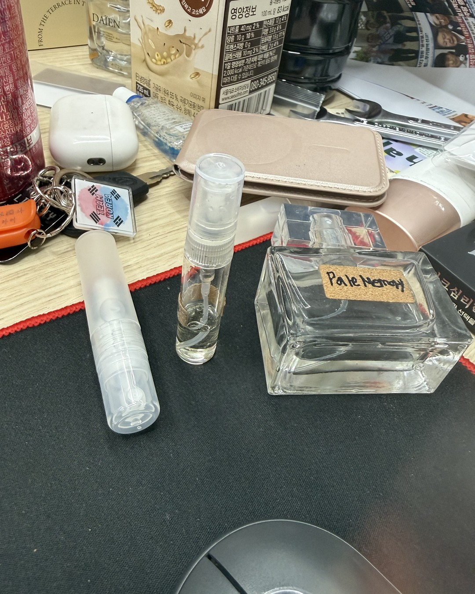
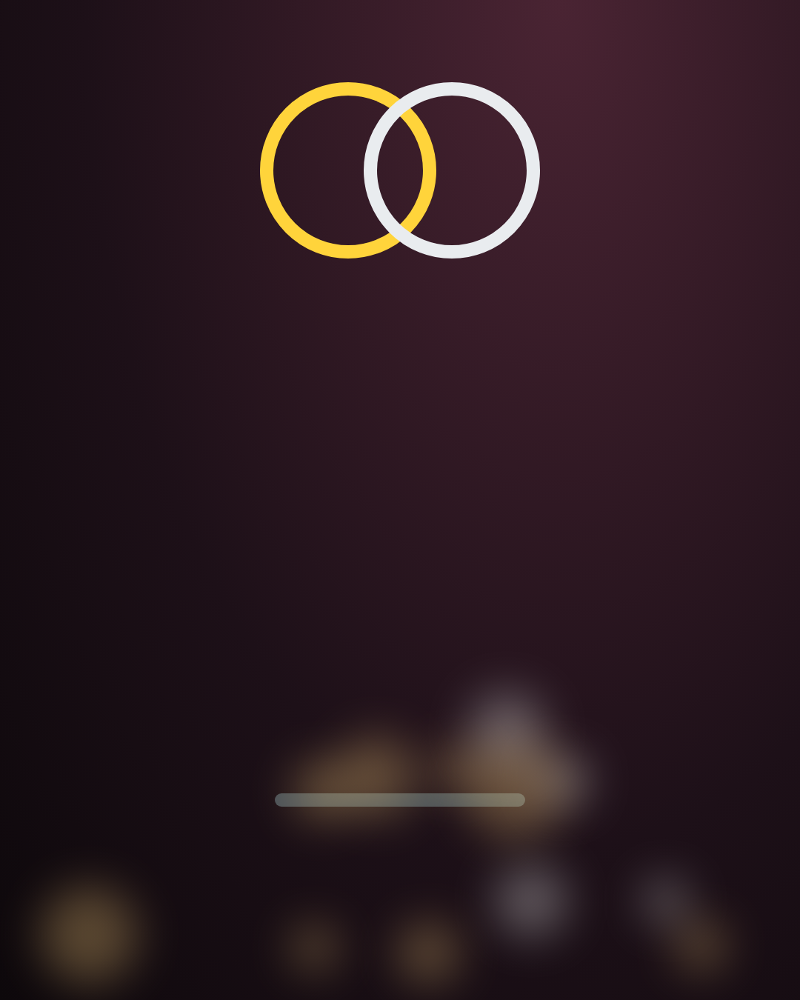
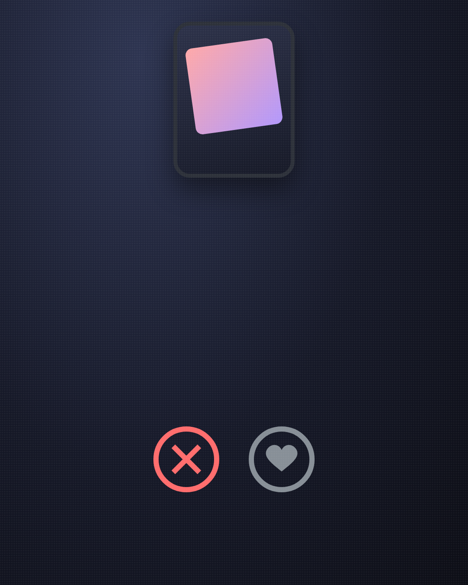
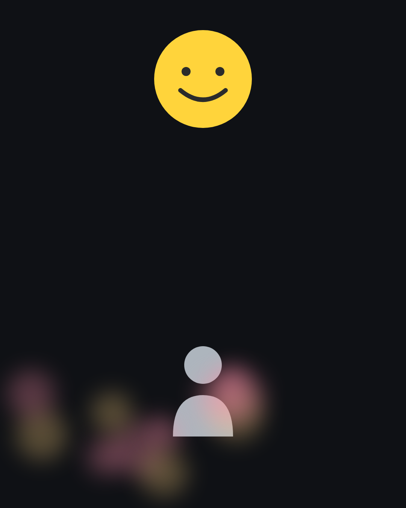
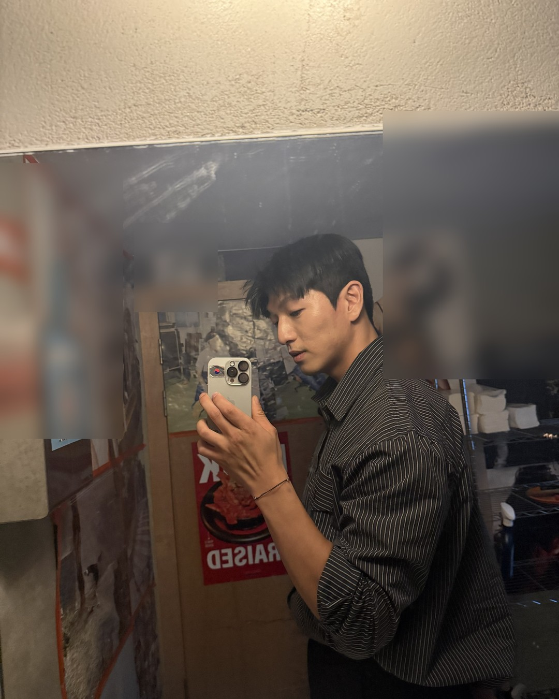

좋은 남자가 여자를 만나는 곳,
따로 있습니다
(어플 말고.)
1/14
@mszexc
넘겨보세요 →

좋은 남자는 왜 내 주변에 없을까?
없는 게 아니라, 다른 곳에 있어요.
2/14
@mszexc
남자들끼리 하는 말 #57

먼저 알아둘 것.
남자는 직접 다가간 여자에게 진지해져요.
(쉽게 얻은 건, 쉽게 놓아요.)
3/14
@mszexc
남자들끼리 하는 말 #57

첫 번째.
지인 소개
(친구 얼굴이 걸려 있으면, 남자는 함부로 못 해요.)
4/14
@mszexc
남자들끼리 하는 말 #57
두 번째.
매주 가는 곳
(헬스장 · 러닝크루 · 클래스. 같은 사람을 여러 번 보는 곳.)
5/14
@mszexc
남자들끼리 하는 말 #57

왜냐하면
남자는 여러 번 본 여자에게 말 걸 용기가 생겨요.
(처음 본 날엔 대부분 아무 말도 못 해요.)
6/14
@mszexc
남자들끼리 하는 말 #57

세 번째.
일 · 공부로 만나는 곳
(스터디 · 세미나 · 업무 미팅. 성실함이 먼저 보여요.)
7/14
@mszexc
남자들끼리 하는 말 #57

네 번째.
친구 결혼식
(남의 결혼식에서, 남자는 자기 결혼을 생각해요.)
8/14
@mszexc
남자들끼리 하는 말 #57

남자들끼리는 이렇게 말해요.
"거기 매주 오는 그분 있잖아. 오늘은 말 걸어볼까?"
(남자는 이 말을 몇 주씩 미뤄요.)
9/14
@mszexc
남자들끼리 하는 말 #57

반대로
좋은 남자도 진지해지기 어려운 곳.
(어플 · 헌팅 술집. 서로를 "고르러" 오는 곳이에요.)
10/14
@mszexc
남자들끼리 하는 말 #57

그리고 장소보다 중요한 것.
같은 시간, 같은 곳에, 꾸준히.
(남자에게 "또 보는 사람"이 되는 거예요.)
11/14
@mszexc
남자들끼리 하는 말 #57

눈이 마주치면
먼저 한 번 웃어 주세요.
(그 한 번이 남자에게는, 말 걸어도 된다는 허락이에요.)
12/14
@mszexc
남자들끼리 하는 말 #57
말은 남자가 먼저 걸게 두세요.
그래야 남자가 노력해요.
13/14
@mszexc
남자들끼리 하는 말 #57

이것만 기억하세요.
좋은 남자는 찾는 게 아니라, 다가오게 두는 거예요.
남자가 하는 말의 뜻은 전자책 1·2권에 · 프로필 링크에서 무료로 받아보세요
14/14
@mszexc
남자들끼리 하는 말 #57